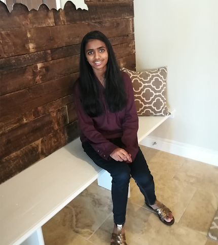

Second  Chances
Chances
About the Creators
Hello, we are the founders of Second Chances!
Group info and photo
Maya Maldonado

High School: Ann Richards School for Young Women Leaders
Extracurriculars: Volleyball, National Honor Society, National Art Honor Society, Model UN, Girls Who Code
Hobbies: Listening to music, playing volleyball, working out, hanging out with friends, likes to record videos and make mini vlogs by editing them with software such as After Effects and iMovie.
Quote Maya lives by: "Don't be sad because sad spelled backwards is das and das not good!" -Anonymous
Aashi Vishnoi

High School: Westwood High School
Extracurriculars: part of DECA and HOSA, Health Science Academy Ambassador, tutoring elementary school and middle school students.
Hobbies: Playing the piano, going on runs, and swimming.
Quote Aashi lives by: "Just keep swimming" -Dory
Lizbeth Frausto

High School: Ann Richards School for Young Women Leaders
Extracurriculars: National Honor Society, World Language Honor Society, National Arts Honor Society, Young Womens Prepatory Network, Youth and Government, Model UN, Girls Who Code, Chamber Orchestra, Varsity High School Orchestra
Hobbies: Texas Soryu Karate, playing the cello and guitar, and hanging out with friends.
Quote you live by: "Knowledge is a power, but knowing how to use that knowledge for good, is a superpower" -unknown
Anahi Jaimes

Kipp?
Extracurriculars: Volleyball, National Honor Society, National Art Honor Society
Hobbies: Listening to music, playing volleyball, working out, hanging out with friends, likes to record videos and make mini vlogs by editing them with software such as After Effects and iMovie.
Quote Aashi lives by: "don't be sad because sad spelled backwards is das and das not good!"